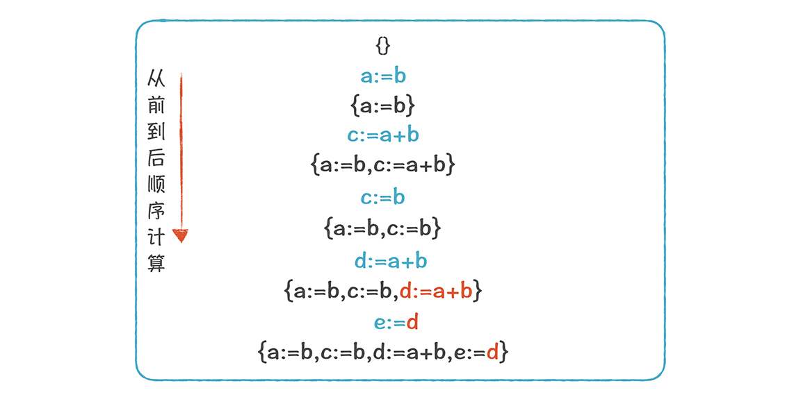
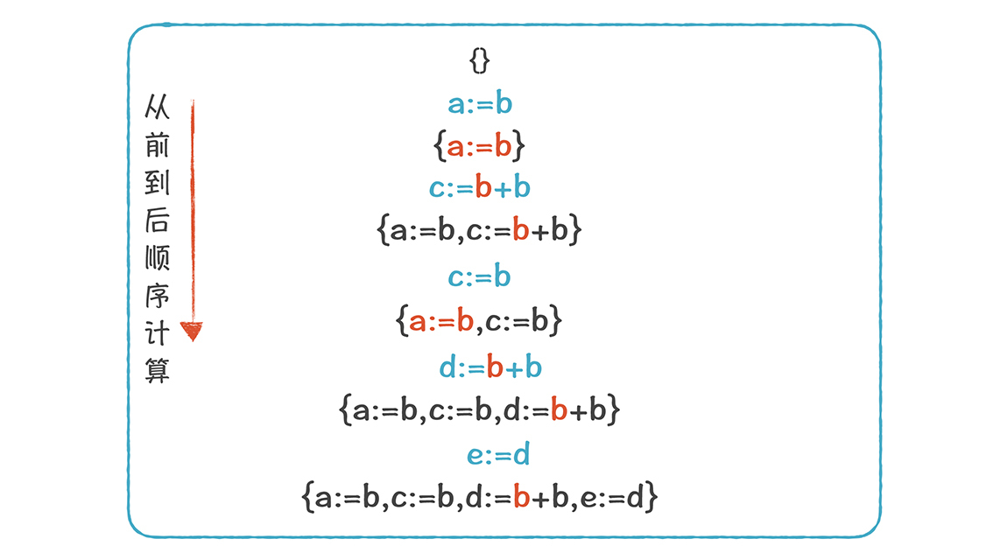
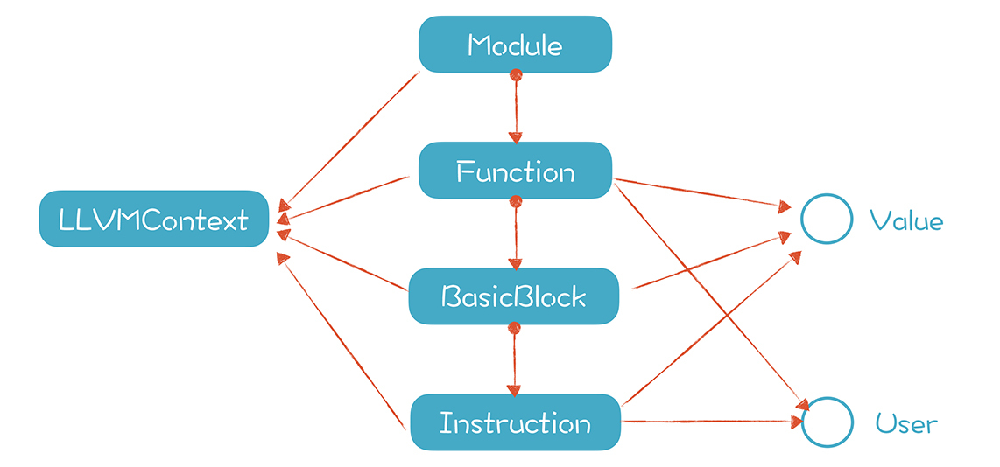

- 00 开篇词 为什么你要学习编译原理？.md.html
- 01 理解代码：编译器的前端技术.md.html
- 02 正则文法和有限自动机：纯手工打造词法分析器.md.html
- 03 语法分析（一）：纯手工打造公式计算器.md.html
- 04 语法分析（二）：解决二元表达式中的难点.md.html
- 05 语法分析（三）：实现一门简单的脚本语言.md.html
- 06 编译器前端工具（一）：用Antlr生成词法、语法分析器.md.html
- 07 编译器前端工具（二）：用Antlr重构脚本语言.md.html
- 08 作用域和生存期：实现块作用域和函数.md.html
- 09 面向对象：实现数据和方法的封装.md.html
- 10 闭包： 理解了原理，它就不反直觉了.md.html
- 11 语义分析（上）：如何建立一个完善的类型系统？.md.html
- 12 语义分析（下）：如何做上下文相关情况的处理？.md.html
- 13 继承和多态：面向对象运行期的动态特性.md.html
- 14 前端技术应用（一）：如何透明地支持数据库分库分表？.md.html
- 15 前端技术应用（二）：如何设计一个报表工具？.md.html
- 16 NFA和DFA：如何自己实现一个正则表达式工具？.md.html
- 17 First和Follow集合：用LL算法推演一个实例.md.html
- 18 移进和规约：用LR算法推演一个实例.md.html
- 19 案例总结与热点问题答疑：对于左递归的语法，为什么我的推导不是左递归的？.md.html
- 20 高效运行：编译器的后端技术.md.html
- 21 运行时机制：突破现象看本质，透过语法看运行时.md.html
- 22 生成汇编代码（一）：汇编语言其实不难学.md.html
- 23 生成汇编代码（二）：把脚本编译成可执行文件.md.html
- 24 中间代码：兼容不同的语言和硬件.md.html
- 25 后端技术的重用：LLVM不仅仅让你高效.md.html
- 26 生成IR：实现静态编译的语言.md.html
- 27 代码优化：为什么你的代码比他的更高效？.md.html
- 28 数据流分析：你写的程序，它更懂.md.html
- 29 目标代码的生成和优化（一）：如何适应各种硬件架构？.md.html
- 30 目标代码的生成和优化（二）：如何适应各种硬件架构？.md.html
- 31 内存计算：对海量数据做计算，到底可以有多快？.md.html
- 32 字节码生成：为什么Spring技术很强大？.md.html
- 33 垃圾收集：能否不停下整个世界？.md.html
- 34 运行时优化：即时编译的原理和作用.md.html
- 35 案例总结与热点问题答疑：后端部分真的比前端部分难吗？.md.html
- 36 当前技术的发展趋势以及其对编译技术的影响.md.html
- 37 云编程：云计算会如何改变编程模式？.md.html
- 38 元编程：一边写程序，一边写语言.md.html
- 加餐 汇编代码编程与栈帧管理.md.html
- 用户故事 因为热爱，所以坚持.md.html
- 第二季回归 这次，我们一起实战解析真实世界的编译器.md.html
- 结束语 用程序语言，推动这个世界的演化.md.html
- 捐赠
27 代码优化：为什么你的代码比他的更高效？
在使用LLVM的过程中，你应该觉察到了，优化之后和优化之前的代码相差很大。代码优化之后，数量变少了，性能也更高了。而针对这个看起来很神秘的代码优化，我想问你一些问题：
- 代码优化的目标是什么？除了性能上的优化，还有什么优化？
- 代码优化可以在多大的范围内执行？是在一个函数内，还是可以针对整个应用程序？
- 常见的代码优化场景有哪些？
这些问题是代码优化的基本问题，很重要，我会用两节课的时间带你了解和掌握。
当然了，代码优化是编译器后端的两大工作之一（另一个是代码生成），弄懂它，你就掌握了一大块后端技术。而学习代码优化的原理，然后通过LLVM实践一下，这样原理与实践相结合，会帮你早日弄懂代码优化。
接下来，我带你概要地了解一下代码优化的目标、对象、范围和策略等内容。
了解代码优化的目标、对象、范围和策略
- 代码优化的目标
代码优化的目标，是优化程序对计算机资源的使用。我们平常最关心的就是CPU资源，最大效率地利用CPU资源可以提高程序的性能。代码优化有时候还会有其他目标，比如代码大小、内存占用大小、磁盘访问次数、网络通讯次数等等。
- 代码优化的对象
从代码优化的对象看，大多数的代码优化都是在IR上做的，而不是在前一阶段的AST和后一阶段汇编代码上进行的，为什么呢？
其实，在AST上也能做一些优化，比如在讲前端内容的时候，我们曾经会把一些不必要的AST层次削减掉（例如add->mul->pri->Int，每个父节点只有一个子节点，可以直接简化为一个Int节点），但它抽象层次太高，含有的硬件架构信息太少，难以执行很多优化算法。 在汇编代码上进行优化会让算法跟机器相关，当换一个目标机器的时候，还要重新编写优化代码。所以，在IR上是最合适的，它能尽量做到机器独立，同时又暴露出很多的优化机会。
- 代码优化的范围
从优化的范围看，分为本地优化、全局优化和过程间优化。
优化通常针对一组指令，最常用也是最重要的指令组，就是基本块。基本块的特点是：每个基本块只能从入口进入，从最后一条指令退出，每条指令都会被顺序执行。因着这个特点，我们在做某些优化时会比较方便。比如，针对下面的基本块，我们可以很安全地把第3行的“y:=t+x”改成“y:= 3 * x”，因为t的赋值一定是在y的前面：
BB1:
t:=2 * x
y:=t + x
Goto BB2
这种针对基本块的优化，我们叫做本地优化（Local Optimization）。
那么另一个问题来了：我们能否把第二行的“t:=2 * x”也优化删掉呢？这取决于是否有别的代码会引用t。所以，我们需要进行更大范围的分析，才能决定是否把第二行优化掉。
超越基本块的范围进行分析，我们需要用到控制流图（Control Flow Graph，CFG）。CFG是一种有向图，它体现了基本块之前的指令流转关系。如果从BB1的最后一条指令是跳转到BB2，那么从BB1到BB2就有一条边。一个函数（或过程）里如果包含多个基本块，可以表达为一个CFG。

如果通过分析CFG，我们发现t在其他地方没有被使用，就可以把第二行删掉。这种针对一个函数、基于CFG的优化，叫做全局优化（Global Optimization）。
比全局优化更大范围的优化，叫做过程间优化（Inter-procedural Optimization），它能跨越函数的边界，对多个函数之间的关系进行优化，而不是仅针对一个函数做优化。
- 代码优化的策略
最后，你不需要每次都把代码优化做彻底，因为做代码优化本身也需要消耗计算机的资源。所以，你需要权衡代码优化带来的好处和优化本身的开支这两个方面，然后确定做多少优化。比如，在浏览器里加载JavaScript的时候，JavaScript引擎一定会对JavaScript做优化，但如果优化消耗的时间太长，界面的响应会变慢，反倒影响用户使用页面的体验，所以JavaScript引擎做优化时要掌握合适的度或调整优化时机。
接下来，我带你认识一些常见的代码优化的场景，这样可以让你对代码优化的认识更加直观，然后我们也可以将这部分知识作为后面讨论算法的基础。
一些优化的场景
- 代数优化（Algebraic Optimazation）
代数优化是最简单的一种优化，当操作符是代数运算的时候，你可以根据学过的数学知识进行优化。
比如“x:=x+0 ”这行代码，操作前后x没有任何变化，所以这样的代码可以删掉；又比如“x:=x*0” 可以简化成“x:=0”；对某些机器来说，移位运算的速度比乘法的快，那么“x:=x*8”可以优化成“x:=x<”。
- 常数折叠（Constant Folding）
它是指，对常数的运算可以在编译时计算，比如 “x:= 20 * 3 ”可以优化成“x:=60”。另外，在if条件中，如果条件是一个常量，那就可以确定地取某个分支。比如：“If 2>0 Goto BB2” 可以简化成“Goto BB2”就好了。
- 删除不可达的基本块
有些代码永远不可能被激活。比如在条件编译的场景中，我们会写这样的程序：“if(DEBUG) {…}”。如果编译时，DEBUG是一个常量false，那这个代码块就没必要编译了。
- 删除公共子表达式（Common Subexpression Elimination）
下面这两行代码，x和y右边的形式是一样的，如果这两行代码之间，a和b的值没有发生变化（比如采用SSA形式），那么x和y的值一定是一样的。
x := a + b
y := a + b
那我们就可以让y等于x，从而减少了一次“a+b”的计算，这种优化叫做删除公共子表达式。
x := a + b
y := x
- 拷贝传播（Copy Propagation）和常数传播（Constant Propagation）
下面的示例代码中，第三行可以被替换成“z:= 2 * x”， 因为y的值就等于x，这叫做拷贝传播。
x := a + b
y := x
z := 2 * y
如果y := 10，常数10也可以传播下去，把最后一行替换成 z:= 2 * 10，这叫做常数传播。再做一次常数折叠，就变成 z:=20了。
- 死代码删除（Ded code elimination）
在上面的拷贝传播中，如果没有其他地方使用y变量了，那么第二行就是死代码，就可以删除掉，这种优化叫做死代码删除。
最后我强调一下，一个优化可能导致另一个优化，比如，拷贝传播导致y不再被使用，我们又可以进行死代码删除的优化。所以，一般进行多次优化、多次扫描。
了解了优化的场景之后，你能直观地知道代码优化到底做了什么事情，不过知其然还要知其所以然，你还需要了解这些优化都是怎么实现的。
如何做本地优化
上面这些优化场景，可以用于本地优化、全局优化和过程间优化。这节课我们先看看如何做本地优化，因为它相对简单，学习难度较低，下节课再接着讨论全局优化。
假设下面的代码是一个基本块（省略最后的终结指令）：
a := b
c := a + b
c := b
d := a + b
e := a + b
为了优化它们，我们的方法是计算一个“可用表达式（available expression）”的集合。可用表达式，是指存在一个变量，保存着某个表达式的值。
我们从上到下顺序计算这个集合：
1.一开始是空集。- 2.经过第一行代码后，集合里增加了“a:=b”；- 3.经过第二行代码后，增加了“c:=a+b”。- 4.注意，在经过第三行代码以后，由于变量c的定义变了，所以“c:=a+b”不再可用，而是换成了“c:=b”。

你能看到，代码“e:=a+b”，和集合中的“d:=a+b”等号右边部分是相同的，所以我们首先可以删除公共子表达式，优化成“e:=d”。变成下面这样：

然后，我们可以做一下拷贝传播，利用“a:=b”，把表达式中的多个a都替换成b。

到目前为止，a都被替换成了b，对e的计算也简化了，优化后的代码变成了下面这样：
a := b
c := b + b
c := b
d := b + b
e := d
观察一下这段代码，它似乎还存在可优化的空间，比如，会存在死代码，而我们可以将其删除。
假设，在后序的基本块中，b和c仍然会被使用，但其他变量就不会再被用到了。那么，上面这5行代码哪行能被删除呢？这时，我们要做另一个分析：活跃性分析（Liveness Analysis）。
我们说一个变量是活的，意思是它的值在改变前，会被其他代码读取。（对于SSA格式的IR，变量定义出来之后就不会再改变，所以你只要看后面的代码有没有使用这个变量的就可以了）我们会分析每个变量的活跃性，把死的变量删掉。
怎么做呢？我们这次还是要借助一个集合，不过这个集合是从后向前，倒序计算的。
一开始集合里的元素是{b, c}，这是初始值，表示b和c会被后面的代码使用，所以它们是活的。
- 扫描过“e := d”后，因为用到了d，所以d是活的，结果是{b, c, d}。
- 再扫描“d := b + b”，用到了b，但集合里已经有b了；这里给d赋值了，已经满足了后面代码对d的要求，所以可以从集合里去掉d了，结果是{b，c}。
- 再扫描“c := b”，从集合里去掉c，结果是{b}。
- 继续扫描，一直到第一行，最后的集合仍然是{b}。
现在，基于这个集合，我们就可以做死代码删除了。当给一个变量赋值时，它后面跟着的集合没有这个变量，说明它不被需要，就可以删掉了。图中标橙色的三行，都是死代码，都可以删掉。
删掉以后，只剩下了两行代码。注意，由于“ e := d”被删掉了，导致d也不再被需要，变成了死变量。

把变量d删掉以后，就剩下了一行代码“c := b”了。

到此为止，我们完成了整个的优化过程，5行代码优化成了1行代码，成果是很显著的！
我来带你总结一下这个优化过程：
我们首先做一个正向扫描，进行可用表达式分析，建立可用表达式的集合，然后参照这个集合替换公共子表达式，以及做拷贝传播。
接着，我们做一个反向扫描，进行活跃性分析，建立活变量的集合，识别出死变量，并依据它删除给死变量赋值的代码。
上述优化可能需要做不止一遍，才能得到最后的结果。
这样看来，优化并不难吧？当然了，目前我们做的优化是基于一段顺序执行的代码，没有跳转，都是属于一个基本块的，属于本地优化。
直观地理解了本地优化之后，我们可以把这种理解用更加形式化的方式表达出来，这样，你可以理解得更加透彻。本地优化中，可用表达式分析和活跃性分析，都可以看做是由下面4个元素构成的：
D（方向）。是朝前还是朝后遍历。
V（值）。代码的每一个地方都要计算出一个值。可用表达式分析和活跃性分析的值是一个集合，也有些分析的值并不是集合，在下一讲你会看到这样的例子。
F（转换函数，对V进行转换）。比如，在做可用表达式分析的时候，遇到了“c := b”时，可用表达式的集合从{a := b, c := a + b}转换成了{a := b, c := b}。这里遵守的转换规则是：因为变量c被重新赋值了，那么就从集合里，把变量c原来的定义去掉，并把带有c的表达式都去掉，因为过去的c已经失效了，然后，把变量c新的定义加进去。
I（初始值，是算法开始时V的取值）。做可用表达式分析的时候，初始值是空集。在做活跃性分析的时候，初始值是后面代码中还会访问的变量，也就是活变量。
这样形式化以后，我们就可以按照这个模型来统一理解各种本地优化算法。接下来，我们来体验和熟悉一下LLVM的优化功能。
用LLVM来演示优化功能
在25讲中，我们曾经用Clang命令带上O2参数来生成优化的IR：
clang -emit-llvm -S -O2 fun1.c -o fun1-O2.ll
实际上，LLVM还有一个单独的命令opt，来做代码优化。缺省情况下，它的输入和输出都是.bc文件，所以我们还要在.bc和.ll两种格式之间做转换。
clang -emit-llvm -S fun1.c -o fun1.ll //生成LLVM IR
llc fun1.ll -o fun1.bc //编译成字节码
opt -O2 fun1.bc -o fun1-O2.bc //做O2级的优化
llvm-dis fun1-O2.bc -o fun1-O2.ll //将字节码反编译成文本格式
其中要注意的一点，是要把第一行命令生成的fun1.ll文件中的“optnone”这个属性去掉，因为这个它的意思是不要代码优化。
我们还可以简化上述操作，给opt命令带上-S参数，直接对.ll文件进行优化：
opt -S -O2 fun1.ll -o fun1-O2.ll
另外，我解释一下-O2参数：-O2代表的是二级优化，LLVM中定义了多个优化级别，基本上数字越大，所做的优化就越多。
我们可以不使用笼统的优化级别，而是指定采用某个特别的优化算法，比如mem2reg算法，会把对内存的访问优化成尽量访问寄存器。
opt -S -mem2reg fun1.ll -o fun1-O2.ll
用opt –help命令，可以查看opt命令所支持的所有优化算法。
对于常数折叠，在调用API生成IR的时候，LLVM缺省就会去做这个优化。比如下面这段代码，是返回2+3的值，但生成IR的时候直接变成了5，因为这种优化比较简单，不需要做复杂的分析：
Function * codegen_const_folding(){
//创建函数
FunctionType *funType = FunctionType::get(Type::getInt32Ty(TheContext), false);
Function *fun = Function::Create(funType, Function::ExternalLinkage, "const_folding", TheModule.get());
//创建一个基本块
BasicBlock *BB = BasicBlock::Create(TheContext, "", fun);
Builder.SetInsertPoint(BB);
Value * tmp1 = ConstantInt::get(TheContext, APInt(32, 2, true));
Value * tmp2 = ConstantInt::get(TheContext, APInt(32, 3, true));
Value * tmp3 = Builder.CreateAdd(tmp1, tmp2);
Builder.CreateRet(tmp3);
return fun;
}
生成的IR如下：
define i32 @const_folding() {
ret i32 5
}
你需要注意，很多优化算法，都是要基于寄存器变量来做，所以，我们通常都会先做一下-mem2reg优化。
在LLVM中，做优化算法很方便，因为它采用的是SSA格式。具体来说，LLVM中定义了Value和User两个接口，它们体现了LLVM IR最强大的特性，即静态单赋值中的定义-使用链，这种定义-使用关系会被用到优化算法中。
在26讲中，我们已经讲过了Value类。
如果一个类是从Value继承的，意味着它定义了一个值。另一个类是User类，函数和指令也是User类的子类，也就是说，在函数和指令中，可以使用别的地方定义的值。

这两个类是怎么帮助到优化算法中的呢？
在User中，可以访问所有它用到的Value，比如一个加法指令（%c = add nsw i32 %a, %b）用到了a和b这两个变量。
而在Value中，可以访问所有使用这个值的User，比如给c赋值的这条指令。
所以，你可以遍历一个Value的所有User，把它替换成另一个Value，这就是拷贝传播。
接下来，我们看看如何用程序实现IR的优化。
在LLVM内部，优化工作是通过一个个的Pass（遍）来实现的，它支持三种类型的Pass：
一种是分析型的Pass（Analysis Passes），只是做分析，产生一些分析结果用于后序操作。
一些是做代码转换的（Transform Passes），比如做公共子表达式删除。
还有一类pass是工具型的，比如对模块做正确性验证。你可以查阅LLVM所支持的各种Pass。
下面的代码创建了一个PassManager，并添加了两个优化Pass：
// 创建一个PassManager
TheFPM = std::make_unique<legacy::FunctionPassManager>(TheModule.get());
// 窥孔优化和一些位计算优化
TheFPM->add(createInstructionCombiningPass());
// 表达式重关联
TheFPM->add(createReassociatePass());
TheFPM->doInitialization();
之后，再简单地调用PassManager的run()方法，就可以对代码进行优化：
TheFPM->run(*fun);
你可以查看本讲附带的代码，尝试自己编写一些示例程序，查看优化前和优化后的效果。
课程小结
本节课，我带你学习了代码优化的原理，然后通过LLVM实践了一下，演示了优化功能，我希望你能记住几个关键点：
1.代码优化分为本地优化、全局优化和过程间优化三个范围。有些优化对于这三个范围都是适用的，但也有一些优化算法是全局优化和过程间优化专有的。
2.可用表达式分析和活跃性分析是本地优化时的两个关键算法。这些算法都是由扫描方向、值、转换函数和初始值这四个要素构成的。
3.LLVM用pass来做优化，你可以通过命令行或程序来使用这些Pass。你也可以编写自己的Pass。
最后，我建议你多编写一些测试代码，并用opt命令去查看它的优化效果，在这个过程中增加对代码优化的感性认识。
一课一思
针对不同的领域（商业、科学计算、游戏等），代码优化的重点可能是不同的。针对你所熟悉的计算机语言和领域，你知道有哪些优化的需求？是采用什么技术实现的？欢迎在留言区分享你的观点。
最后，感谢你的阅读，如果这篇文章有所收获，也欢迎你将它分享给更多的朋友。
© 2019 - 2023 Liangliang Lee. Powered by gin and hexo-theme-book.